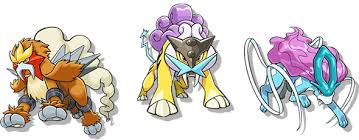
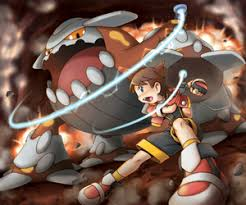
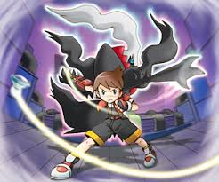

Pokémon Legendarios
Los Pokémon legendarios juegan un papel fundamental en la historia de la saga. Suelen estar relacionados con crisis ambientales, organizaciones villanas y eventos clave del argumento.



Los Pokémon legendarios juegan un papel fundamental en la historia de la saga. Suelen estar relacionados con crisis ambientales, organizaciones villanas y eventos clave del argumento.
Además de la historia principal, Pokémon Ranger ofrece numerosos encargos secundarios que permiten explorar más el mundo del juego y ayudar a sus habitantes.